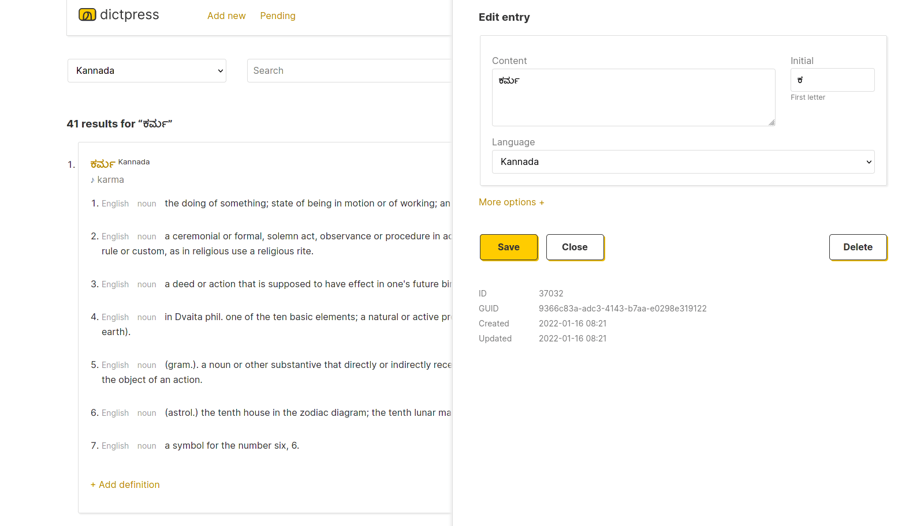

Examples dictionaries:

Admin UI
{kind=link}
Features
- Build dictionaries for any language to any language.
- Supports multiple dictionaries and languages in the same database.
- Custom themes and templates for publishing dictionary websites.
- Paginated A-Z (all alphabets for any language) glossaries.
- HTTP/JSON API for search and everything else.
- Pluggable search algorithms, eg: fulltext search, phonetic word search etc.
- Admin UI for managing and curating dictionary data.
- Admin moderation UI for crowd sourcing dictionary entries.
- Bulk CSV to database import.
How it works
DictPress is language agnostic and has no concept of language semantics.
It stores all data in a Postgres database in just two tables entries and relations.
To make a universal dictionary interface possible,
it treats all dictionary entries as UTF-8 strings that can be accurately searched with Postgres DB's fulltext capabilities
by storing tsvector
tokens alongside them. The tokens that encode and make the entries searchable
can be anything—simple stemmed words or phonetic hashes like Metaphone.
Postgres comes with built-in tokenizers
for two dozen languages (\dFd to see the full list on psql).
For languages that do not have Postgres fulltext tokenisation, search tokens can be generated externally and plugged in. For example, Olam uses MLPhone, a simple Metaphone like phonetic hashing algorithm that allows Malayalam words in the dictionary to be searched by how they sound.
See this article for historical context on the project.
Getting started
- Download the latest version of DictPress.
- Read the docs to install the app and to import dictionary data.